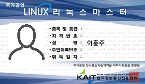

☰ ABILITY
Now
Programming Language
Java
진행도 : ★★★★★★★★★★
이해도 : ★★★★★★★★★★
Javascript
진행도 : ★★★★★★★★★★
이해도 : ★★★★★★★★★★
SQL
진행도 : ★★★★★★★★★★
이해도 : ★★★★★★★★★★
Language
TOEIC
진행도 : ★★★★★★★★★★
이해도 : ★★★★★★★★★★
JLPT
진행도 : ★★★★★★★★★★
이해도 : ★★★★★★★★★★
Programming Language
Phython
간결한 코드, 쉬운 문법
인터프리터 언어
오픈소스(무료 사용 가능)
C, C++, JAVA 등 다른 프로그래밍 언어와 쉽게 통합 가능
라이브러리가 풍부
객체 지향 언어
교차 플랫폼 언어(다양한 플랫폼에서 사용 가능)
JSP(JavaServerPage)
서버사이드 스크립트 언어
Java 언어를 기반으로 하는 스크립트 언어
표현 언어,표현식,액션 태그 등의 스크립트적 요소를 제공
다양한 API나 오픈소스를 제공
자바 기반이기 때문에 윈도우, 리눅스 운영체제 상관없이 플랫폼에 독립적
HTML 코드에 JAVA기반 스크립트 언어로 JAVA 코드를 넣어 동적 웹 서비스를 제공
C language
고급 언어에 속하지만 하드웨어를 직접 제어 가능
절차 지향적 특성
C언어는 여러 언어에 영향을 끼쳤다.
C언어로 작성된 프로그램은 이식성이 우수
C언어로 구현된 프로그램은 성능이 우수
C++
C언어의 개선(증가연산자의 의미의 ++)
구조화된 프로그램 구현 가능
컴퓨터를 강력하게 제어 가능
이식성이 좋고 유연
PHP
주로 HTML 코드를 프로그래밍적으로 생성
서버쪽에서 실행되는 프로그래밍 언어
Personal Home Page Tools -> PHP:Hypertext Preprocessor
웹에 최적화된 언어
웹개발에 필요한 수많은 로직들이 함수의 형태로 미리 제공
크로스플랫폼
거의 모든 데이터베이스를 지원
가장 많은 공개소프트웨어가 PHP로 구성
Certification
Linux Master grade 2
Introduction

한국정보통신진흥협회가 운영하는 국가 공인 민간 자격증
리눅스 기반의 Desktop 활용 및 Server 운영 능력, 리눅스 시스템의 설계 개발 및 관리 능력, 리눅스 기반의 네트워크 및 서버 구축/운영 능력을 검정하는 자격증
Range

Industrial Engineer Information Processing
정교한 소프트웨어 프로그램을 개발,관리하여 업무의 효율을 향상
컴퓨터에 관한 전문적인 지식과 기술을 갖춘 전문가를 양성하기 위한 목적
각 분야에서 필요로 하는 시스템을 분석,설계,개발,구현
정보처리기사는 시스템을 만드는 데서 그치지 않고 이를 운영,유지하고 보수
정보처리기능사 -> 정보처리산업기사 -> 정보처리기사 -> 정보관리기술사
과목 : 데이터베이스 / 전자계산기구조 / 운영체제 / 소프트웨어공학 / 데이터통신
OCJAP
Oracle Certified Java Programmer
국제자격증
과목 : Java SE 8 Programmer 1
Language
TOEIC
Test Of English for Internaional Communication
영어가 모국어가 아닌 사람들을 대상으로 의사소통 능력을 평가하는 시험(Standardized Test)
토익 리스닝&리딩 - 청해능력 , 독해능력
토익 스피킹&라이팅 - 영어 구어 및 문어표현법
토익 브릿지 - 리스닝과 리딩
JLPT grade 3
Japanese Language Proficiency Test
일본어 능력 시험는 재단법인 일본국제교육지원협회와 국제교류기금의 주최로 시행되는 시험으로서 일본어 시험 중 전 세계적으로 공신력을 인정받는 국제 자격증 시험 중 하나
읽기 - 일상적인 화제에 구체적인 내용을 나타내는 문장을 읽고 이해할 수 있으며, 신문의 기사제목등에서 정보의 개요를 파악할 수 있다.
일상적인 장면에서 난이도가 약간 높은 문장을 바꿔 제시하며 요지를 이해할 수 있다.
듣기 - 자연스러운 속도의 체계적 내용의 회화를 듣고, 이야기의 구체적인 내용을 등장인물의 관계등과 함께 거의 이해할 수 있다.
HSK grade 3
중국정부기구인 중국국가한반이 중국교육부령에 의거하여 출제,채점 및 성적표를 발급
중국어가 모국어가 아닌 사람들을 대상으로 중국어 능력을 평가하는 시험
HSK 3급에 합격한 응시자는 중국어로 일상생활, 학습, 업무 등 각 분야의 상황에서 기본적인 회화 진행이 가능